Découvrez votre parc
Le Parc naturel régional de Camargue : un territoire et un organisme public Le Parc naturel régional de Camargue est situé au bord de la
Méditerranée, à l’intérieur du delta du Rhône, principalement entre les deux bras du fleuve. Il s’étend sur 3 communes : une partie de la
commune d’Arles et de Port-Saint-Louis-du-Rhône et toute la commune des Saintes-Maries-de-la-Mer. Comme les 58 autres Parcs naturels régionaux
de France, le Parc naturel régional de Camargue est à la fois : un territoire rural, ouvert et habité, à l’équilibre fragile, reconnu pour sa
qualité exceptionnelle, où conservation de la nature et développement des activités humaines doivent aller de pair ; un organisme investi de
missions d’intérêt général : protection et gestion du patrimoine naturel et culturel, aménagement du territoire, développement économique et
social, accueil, éducation, information, expérimentation.
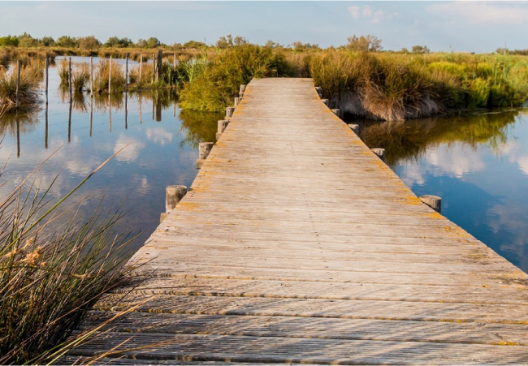
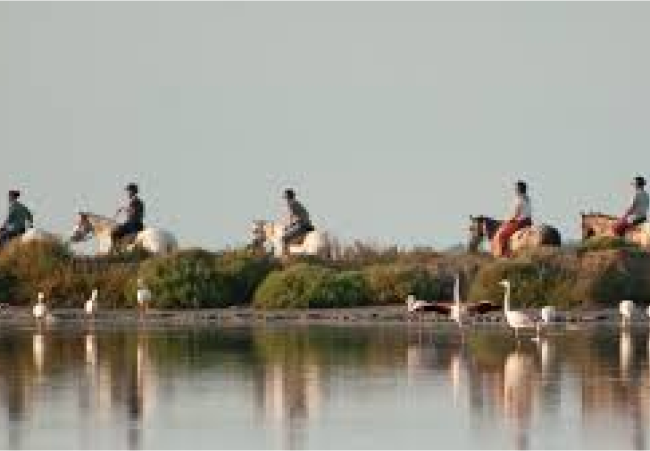
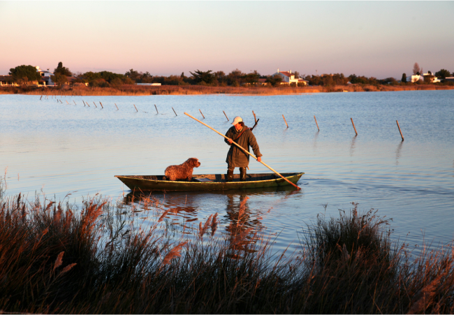
Galerie Photos
Vie Animale
CHEVAL DE CAMARGUE
Le Camargue est un petit cheval à la robe gris clair, très connu et apprécié pour sa polyvalence. C’est une des races les plus anciennes du monde, qui est aujourd’hui protégée et dont l’élevage se fait dans des conditions spécifiques (le système de manade).
Son surnom de « Cheval blanc de la mer » lui vient de son lieu de naissance et lui a permis d’acquérir robustesse et typicité.
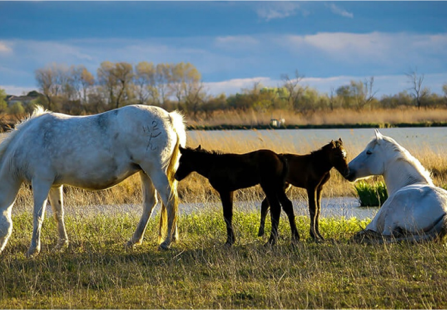
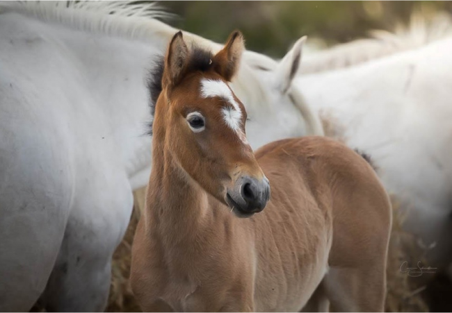
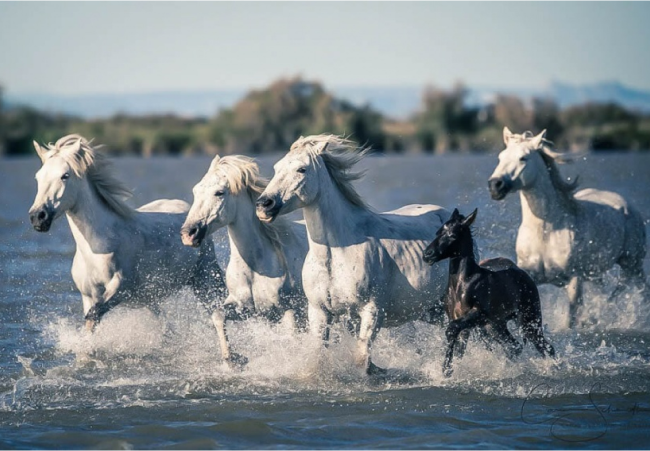
FLAMANT ROSE
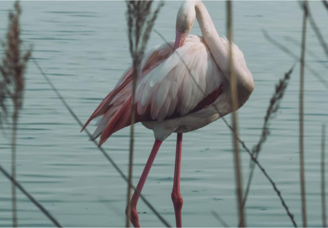
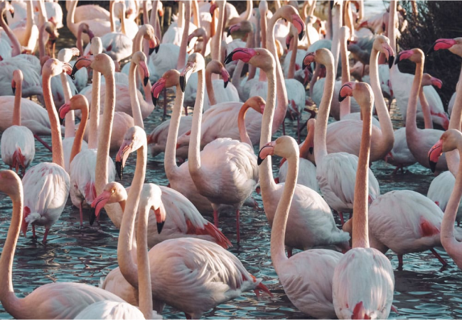
Le Flamant Rose est une des 400 espèces d'oiseaux observées en Camargue à ce jour. Il est peut-être le plus fascinant. Depuis le début des années 70, la plus grande colonie de Flamants roses de Méditerranée occidentale se reproduit sur un îlot en Camargue. Les scientifiques, bénévoles amoureux de la nature, ont mis au point un vaste programme pour protéger le flamant rose et lui offrir une résidence confortable. Le site où nichent les flamants qui appartenait jusqu'alors à la Compagnie des Salins du Midi, est depuis fin 2008 une remarquable propriété du Conservatoire du Littoral. Si la vigilance est toujours d'actualité pour garantir sa reproduction, la colonie présente dans le Delta est exceptionnelle et de notoriété mondiale avec 10 à 15 000 couples chaque année.
HÉRON GARDE-BOEUF
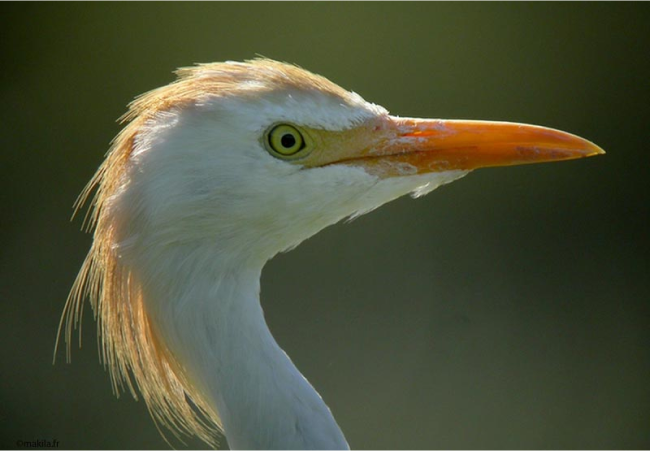
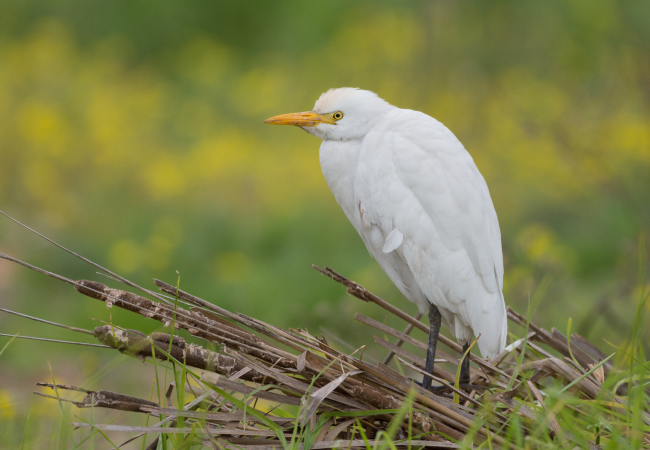
Ce petit héron blanc doit son nom au fait qu’il se tient volontiers près du bétail. Il profite ainsi de la présence de ce dernier en se nourrissant d’insectes effarouchés. Il se reconnaît à sa silhouette assez trapue, à son bec plutôt court et au net renflement de plumes sous ce dernier. Le garde-boeuf diffère des autres hérons par sa silhouette massive et son bec court.
TAUREAU DE CAMARGUE
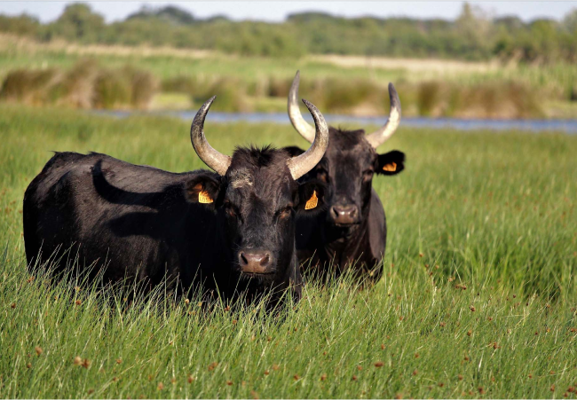
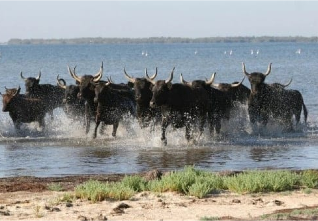
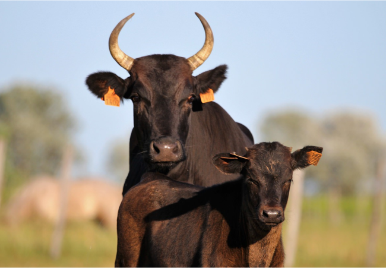
De race camarguaise, il est petit, nerveux et plus rapide que les taureaux espagnols.
C'est la seule race européenne qui est encore considérée comme sauvage, elle est une race dite « brave ».
Cette race existe depuis fort longtemps dans la région de la Camargue : elle est mentionnée par des écrits qui datent de l'époque gallo-romaine. Elle est élevée en mode semi-sauvage, ogn peut donc penser qu'elle est restée telle qu'elle était il y a deux mille ans.
Activités
Que vous soyez amateur de balades à vélo, passionné de tourisme équestre ou que vous préfériez découvrir
cette terre sauvage à pied, la Camargue offre une multitude de possibilités pour tous les types
d'aventuriers. Partez à la découverte de ses vastes étendues de marais, de ses plages sauvages et de ses
marais salants, tout en observant la faune et la flore exceptionnelles de ce parc naturel. Que ce soit pour
une excursion tranquille ou une aventure plus sportive, chaque activité est l'occasion de vivre la Camargue
autrement, dans le respect de son environnement préservé.
Vélo
Enfourchez un vélo et pique-niquez au phare de la Gacholle
une escapade à vélo le long de la digue à la mer pour rejoindre le phare de la Gacholle entre les
Saintes-Maries-de-la-Mer et le Salin-de-Giraud. Cette balade de 26 km (3 heures aller-retour) entièrement
sécurisée évolue sur un terrain plat, rectiligne alternant entre le revêtement d’une petite route cabossée
et de petits bancs de sable.
Parfois ça patine, on s’enfonce dans le sable. Il faut alors pousser le vélo, l’occasion de souffler un peu
et de prendre le temps d’admirer le paysage, avec d’un côté la mer et de l’autre les étangs colonisés par
les oiseaux. Quelques petites pauses s’imposent sur la plage pour faire des ricochets et prendre des photos
des échassiers avant la pause pique-nique au phare.
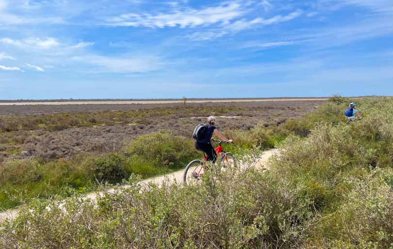
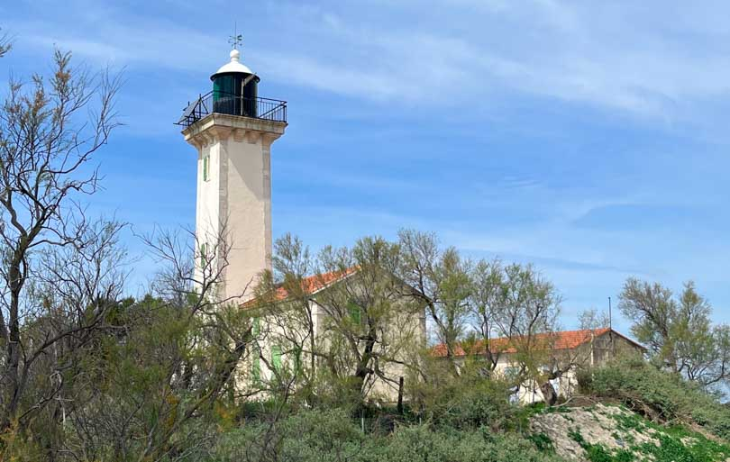
Tourisme équestre
Chevauchez les marais à cheval aux Saintes-Maries-de-la-Mer
Et c’est parti pour 2h sur de beaux chevaux blancs camarguais à naviguer entre roselières, lagunes, étangs
et bras de mer. Attention, prenez vos précautions et protégez-vous des moustiques qui sont particulièrement
coriaces et qui mitraillent jusqu’à transpercer les Jeans. On comprend mieux pourquoi les guardians sont
couverts des pieds jusqu’au cou. Rien n’enlève la beauté du spectacle. n été, les lagunes s’assèchent
laissant place à la sansouïre, une sorte de steppe limoneuse qui se met à rougeoyer à l’automne. L’hiver
laisse place à des milliers de canards et de nombreux oiseaux, comme le héron pourpré, viennent s’y
reproduire. L’enchaînement de petits trots et de galops nous font sortir de notre rêverie et la traversée
des étangs, les sabots dans l’eau, est un moment épique.
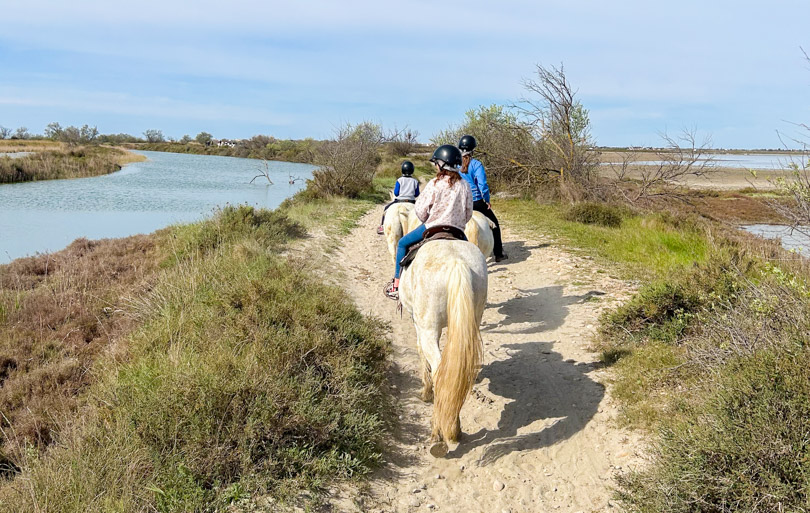
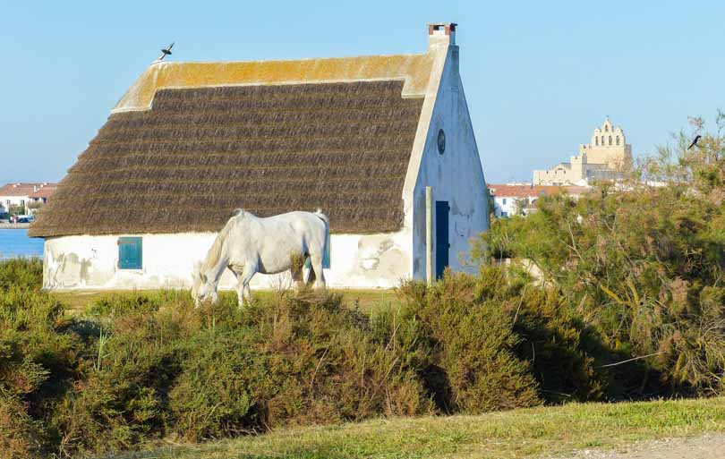
Tourisme terestre
Remontez le temps jusqu’à la Cité fortifiée d’Aigues-Mortes
On commence ce séjour en Camargue pour une immersion incontournable à l’époque gallo-romaine avec la Cité
médiévale d’Aigues-Mortes. Vous pouvez dormir dans un endroit incroyable, une maison située à quelques pas
des remparts.
Comment ne pas être impressionné par la taille massive de ses remparts et ses immenses portes ornementées !
Nous voici plongés dans l’épopée des croisés ! Ici tout est à l’effigie de Louis IX qui a guidé notre
journée. Tout d’abord direction la célèbre place animée Saint-Louis où se dégage un air bohème et une
délicieuse odeur de gardiane émanant des nombreux restaurants. Vous y retrouverez aussi l’Office du Tourisme
qui propose des chasses aux trésors pour les enfants. Voilà une activité en Camargue en famille
incontournable !
Durant un peu plus d’une 1h, nous avons lâché nos petits croisés dans le dédale des ruelles colorées de la
ville. Ils avaient pour défi de trouver des indices afin de résoudre des énigmes sur le circuit des
templiers, de quoi réveiller l’âme chevaleresque de toute la famille. Nous avons sillonné toute l’enceinte
médiévale en quête de la Porte de la Gardette, de la Tour de Constance, de la Chapelle des Pénitents Blancs
et des Pénitents gris … Un chouette parcours avant de prendre l’assaut des remparts et de s’emparer des 15
tours de la ville.
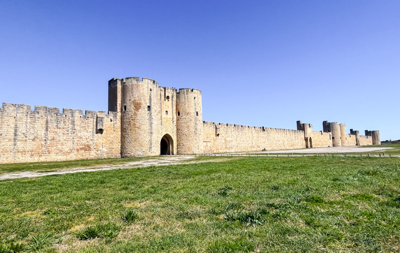
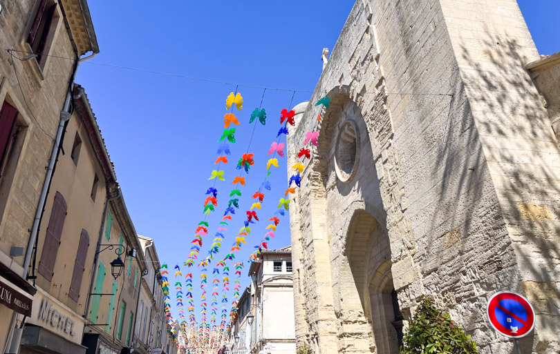